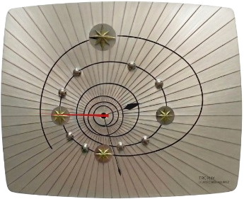

← Travaux · Application bureau
Horloge Houriez
Horloge Windows au design sur mesure — cadran spiralé, aiguilles animées en temps réel. L'heure affichée suit l'horloge système de l'utilisateur, correcte dans son pays et son fuseau.

L'histoire (en bref)
En 1959, Christian Hourriez — élève à l'École Boulle — remporte un concours de la RTF avec un cadran original : les heures réparties sur une spirale, surnommée la « pendule escargot ». Diffusée à l'antenne de l'ORTF de 1959 à 1974, elle servait de mire : les téléspectateurs réglaient leur montre devant la télé. Un horloger fabriqua ensuite une version domestique — la célèbre pendule Trophy.
C'est un ami qui m'a donné l'idée de la recréer en application bureau.
Ce que c'est (en clair)
Une horloge de bureau Windows livrée en exécutable autonome (HorlogeHouriez.exe). Le cadran reprend le design iconique : spirale, étoiles aux points cardinaux, billes le long des orbites, boîtier aux formes arrondies — comme la pendule Trophy ORTF d'origine.
Elle marche. Les trois aiguilles tournent en continu (heures, minutes, secondes). L'heure affichée est celle de l'horloge système de la machine — donc l'heure locale exacte de l'utilisateur, quel que soit son pays, sans réglage manuel ni serveur distant.
Ce que j'ai construit
- Interface sur mesure — cadran spiralé, assets visuels, animation des aiguilles
- Temps réel — synchronisation sur l'horloge OS (fuseau local automatique)
- Packaging bureau — exécutable Windows prêt à lancer, fenêtre dédiée
- Stack Tauri — Rust côté natif, frontend web embarqué via WebView2
Sous le capot (version courte)
L'app est compilée avec Tauri 2 (Rust + WebView2). Le cadran est rendu en HTML/CSS/JS dans une WebView embarquée ; l'heure vient de l'API Date JavaScript, calée sur l'horloge système Windows — même principe qu'une horloge de bureau classique, avec ce design spiralé.
Projet compact, orienté craft visuel et fiabilité : une horloge qui se lance, tourne, et affiche la bonne heure partout où Windows connaît le fuseau local.
← Retour aux travaux